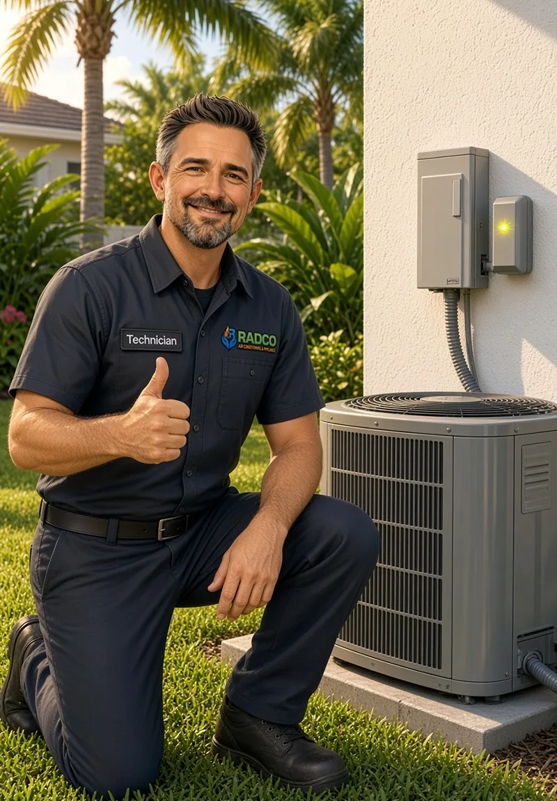

Surge Protection for Existing Systems
Already have an air conditioner or heat pump? We inspect the outdoor unit and electrical connection, then install a surge protection device designed to help shield the equipment from incoming spikes.
Florida storms do more than knock out the lights. A single voltage spike can damage an HVAC circuit board, compressor, or control module. At Radco Air Conditioning & Appliance, we provide dependable HVAC surge protection across Spring Hill, Hernando County, Pasco County, and the surrounding West Central Florida communities.
Whether you need protection added to the system you already have or included with a new installation, our local technicians are ready to help. We focus on installing the right surge guard for your equipment and getting it in place before the next storm.
At Radco, we serve as your go-to local specialists for HVAC surge protection throughout Spring Hill FL and the greater Hernando, Citrus, and Pasco County areas. Our trained team installs protection designed for air conditioners, heat pumps, and related equipment. We focus on delivering high-quality results that help protect your investment while reducing the chance of a sudden, expensive failure.
From a standalone surge guard on an existing unit to protection included with a new system, we work with you to find the solution that fits your home and budget.
Call (352) 684-7821 to get started.
Already have an air conditioner or heat pump? We inspect the outdoor unit and electrical connection, then install a surge protection device designed to help shield the equipment from incoming spikes.
The best time to add protection is when a new system goes in. We can include HVAC surge protection in the installation plan so the investment is guarded from day one.
If you are not sure whether your unit has working surge protection — or the device is old or damaged — we can inspect it during a service or maintenance visit and recommend the right next step.
Add year-round protection with a Radco Comfort Club plan
Enjoy two seasonal tune-ups, priority scheduling, no overtime or emergency fees, and an automatic 15% discount on repairs for both air conditioning and appliance service.
We understand that one storm can put a major HVAC investment at risk. Our goal is to add a practical layer of protection while giving you straightforward options.
Local Technicians
Who live and work in the communities we serve.
HVAC-Sized Protection
Sized for HVAC equipment, not a generic afterthought.
Clear Communication
And honest recommendations, every time.
AC, Heat Pumps & More
Support for air conditioners, heat pumps, and related equipment.
Convenient Scheduling
With repair, installation, or maintenance visits.

We provide HVAC surge protection throughout Spring Hill FL, Hernando County, Pasco County, and nearby communities in West Central Florida. If you’re unsure whether we serve your specific address, call us and we’ll confirm.
Yes. We install protection on many existing air conditioners and heat pumps, and we can also include it when we install a new system.
No device can promise that. A direct or nearby strike can still overwhelm equipment. HVAC surge protection is designed to reduce the risk from common spikes and surges, which is why it is strongly recommended in storm-prone Florida.
Yes. A blown control board, a compressor that will not start, or a system that dies after a storm is often surge-related. If that has already happened, we can diagnose the failure and discuss adding protection when the system is restored.
Yes. Protection plus regular tune-ups is the practical way to keep a system ready for Florida weather. Ask about adding a surge device during your next maintenance visit.
When you need dependable HVAC surge protection near you, Radco Air is here to help. Whether it’s protection for the system you have or an add-on to a new installation, our local team is ready to help guard your equipment.
Call (352) 684-7821 today or request service online. We’re proud to serve Spring Hill, Hernando County, Pasco County, and the surrounding communities with honest, high-quality HVAC care.